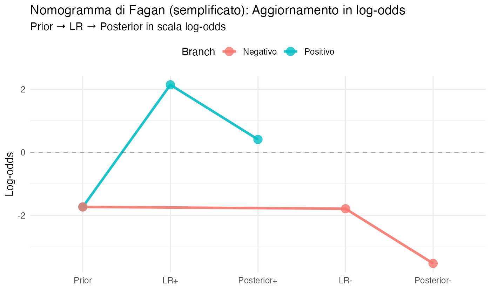
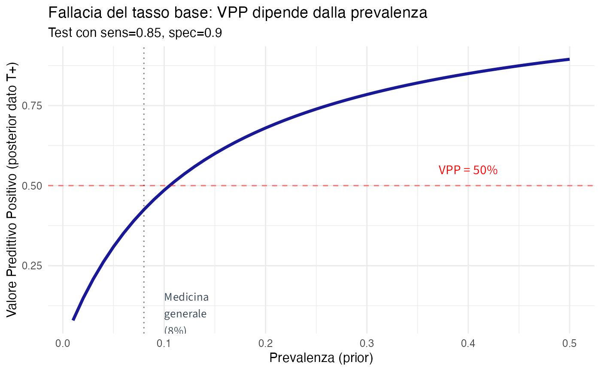

here::here("code", "_common.R") |>
source()
# Load packages
if (!requireNamespace("pacman")) install.packages("pacman")
pacman::p_load(ggplot2, dplyr, tidyr, patchwork)5 Il teorema di Bayes
“It is, without exaggeration, perhaps the most important single equation in history.”
– Tom Chivers (2024)
Introduzione
Il teorema di Bayes rappresenta il culmine naturale del framework bayesiano che abbiamo costruito progressivamente nei capitoli precedenti. Tale sviluppo concettuale si basa su solide fondamenta: la concezione della probabilità come grado di credenza razionale in uno stato di informazione (Capitolo 1), la comprensione degli assiomi come vincoli di coerenza tra credenze (Capitolo 2), il riconoscimento dell’equiprobabilità come caso speciale derivante dalla simmetria epistemica (Capitolo 3) e l’identificazione della probabilità condizionata come meccanismo fondamentale di aggiornamento delle credenze (Capitolo 4).
Il teorema di Bayes emerge direttamente dalla definizione di probabilità condizionata e fornisce la soluzione formale al problema fondamentale dell’inferenza induttiva: come aggiornare razionalmente le credenze riguardanti ipotesi o cause non direttamente osservabili alla luce di evidenze empiriche osservate.
In questo capitolo esploreremo il teorema non solo come formula tecnica, ma anche come principio di razionalità epistemica, ovvero il modo ottimale per combinare in modo sistematico la conoscenza pregressa (distribuzione a priori) con le nuove osservazioni (funzione di verosimiglianza) e ottenere credenze aggiornate e coerenti (distribuzione a posteriori). Esamineremo applicazioni concrete in ambito diagnostico-clinico, nella ricerca psicologica sperimentale e nel ragionamento quotidiano in condizioni di incertezza.
Panoramica del capitolo
- Derivazione del teorema di Bayes dalla probabilità condizionata.
- Interpretazione epistemica dei componenti (prior, likelihood, posterior).
- Forma in odds e likelihood ratio per applicazioni cliniche.
- Probabilità inversa: il problema fondamentale dell’inferenza.
- Applicazioni a test diagnostici e decisioni cliniche.
- Fallacia del tasso base e fallacia del procuratore.
- Visualizzazioni con distribuzioni Beta.
- Collegamenti al flusso di lavoro bayesiano completo.
5.1 Derivazione del teorema di Bayes
Il teorema di Bayes non costituisce un principio nuovo o indipendente, ma emerge come una conseguenza algebrica diretta della definizione di probabilità condizionata.
5.1.1 La simmetria fondamentale della probabilità congiunta
Come abbiamo visto nel Capitolo 4, la probabilità congiunta di due eventi ammette due rappresentazioni equivalenti:
\[ P(A \cap B) = P(A \mid B) \cdot P(B) = P(B \mid A) \cdot P(A). \tag{5.1}\]
Questa simmetria fondamentale discende immediatamente dall’applicazione della definizione di probabilità condizionata in entrambe le direzioni. Uguagliando le due espressioni e risolvendo per \(P(A \mid B)\) si ottiene la formulazione canonica del teorema:
Teorema 5.1 (Teorema di Bayes (forma fondamentale)) Per eventi \(A\) e \(B\) con \(P(B) > 0\):
\[ P(A \mid B) = \frac{P(B \mid A) \cdot P(A)}{P(B)}. \tag{5.2}\]
Componenti epistemiche:
- distribuzione a priori: \(P(A)\) — rappresenta la credenza iniziale in \(A\) prima dell’osservazione di \(B\);
- funzione di verosimiglianza: \(P(B \mid A)\) — quantifica quanto l’evidenza \(B\) è attesa nell’ipotesi che \(A\) sia vero;
- evidenza marginale: \(P(B)\) — costituisce la probabilità complessiva di osservare \(B\) e funge da costante di normalizzazione;
- distribuzione a posteriori: \(P(A \mid B)\) — esprime la credenza rivista in \(A\) dopo aver osservato \(B\).
Forma proporzionale (spesso più intuitiva nelle applicazioni): \[ P(A \mid B) \propto P(B \mid A) \cdot P(A). \]
La distribuzione a posteriori risulta proporzionale al prodotto della verosimiglianza per la distribuzione a priori; la costante di normalizzazione \(P(B)\) garantisce che le probabilità risultanti rispettino l’assioma di normalizzazione.
5.1.2 Collegamento alle tabelle di probabilità congiunta
Il teorema di Bayes risulta geometricamente evidente quando esaminato attraverso la lente delle tabelle di probabilità congiunta introdotte nel Capitolo 2:
| \(B\) | \(B^c\) | Marginali | |
|---|---|---|---|
| \(A\) | \(P(A \cap B)\) | \(P(A \cap B^c)\) | \(P(A)\) |
| \(A^c\) | \(P(A^c \cap B)\) | \(P(A^c \cap B^c)\) | \(P(A^c)\) |
| Marginali | \(P(B)\) | \(P(B^c)\) | \(1\) |
In questa rappresentazione tabellare, i componenti del teorema di Bayes assumono un’interpretazione geometrica immediata:
- distribuzione a priori: \(P(A)\) corrisponde alla probabilità marginale della riga associata ad \(A\);
- funzione di verosimiglianza: \(P(B \mid A) = P(A \cap B) / P(A)\) rappresenta il rapporto tra la cella congiunta e la marginale di riga;
- distribuzione a posteriori: \(P(A \mid B) = P(A \cap B) / P(B)\) costituisce il rapporto tra la cella congiunta e la marginale di colonna.
Interpretazione geometrica: il teorema di Bayes descrive formalmente come “ruotare” la prospettiva probabilistica da una condizionata all’altra sfruttando la struttura simmetrica della distribuzione congiunta. Questa rotazione epistemica permette di convertire la probabilità dell’evidenza dato lo stato (\(P(B \mid A)\)) nella probabilità dello stato dato l’evidenza (\(P(A \mid B)\)) attraverso la mediazione delle probabilità marginali.
# Esempio numerico con tabella congiunta
# Depressione (D) e Test positivo (T+)
P_D <- 0.15
sens <- 0.85
fp_rate <- 0.10
# Costruire tabella (come in Cap. 2)
P_D_and_Tpos <- sens * P_D
P_D_and_Tneg <- (1 - sens) * P_D
P_Dc_and_Tpos <- fp_rate * (1 - P_D)
P_Dc_and_Tneg <- (1 - fp_rate) * (1 - P_D)
tab <- matrix(
c(P_D_and_Tpos, P_D_and_Tneg, P_Dc_and_Tpos, P_Dc_and_Tneg),
nrow = 2, byrow = TRUE,
dimnames = list(Stato = c("D", "D^c"), Test = c("T+", "T-"))
)
cat("Tabella congiunta:\n")
#> Tabella congiunta:
print(round(tab, 4))
#> Test
#> Stato T+ T-
#> D 0.128 0.0225
#> D^c 0.085 0.7650# Calcolare via Bayes
P_B <- sum(tab[, 1]) # P(T+) = marginale colonna
P_A_given_B <- tab[1, 1] / P_B # P(D | T+)#>
#> === TEOREMA DI BAYES DALLA TABELLA ===
#> Prior: P(D) = 0.15
#> Likelihood: P(T+ | D) = 0.85
#> Evidence: P(T+) = 0.212
#> Posterior: P(D | T+) = 0.6
#> Verifica formula:
#> (sens × P(D)) / P(T+) = 0.6 ✓5.2 Interpretazione epistemica: il meccanismo di aggiornamento
Il teorema di Bayes formalizza il ragionamento induttivo razionale. Vediamo come opera.
5.2.1 I tre ingredienti
Prior \(P(H)\): rappresenta la nostra credenza iniziale nell’ipotesi \(H\) prima dell’osservazione dei dati; Questa valutazione preliminare si basa su diverse fonti di informazione, come conoscenze pregresse derivanti da studi precedenti, esperienza clinica consolidata, stime di prevalenza o tassi di base nella popolazione rilevante o, in condizioni di massima ignoranza, l’applicazione del principio di indifferenza.
Likelihood \(P(E \mid H)\): quantifica quanto l’evidenza osservata \(E\) sia compatibile con l’ipotesi \(H\); È cruciale distinguere questa quantità da \(P(H \mid E)\), confusione frequente nota come “fallacia della probabilità inversa”. La funzione di verosimiglianza rappresenta la capacità predittiva dell’ipotesi: nei contesti diagnostici, essa corrisponde ai concetti di sensibilità e specificità dei test.
Posterior \(P(H \mid E)\): esprime la credenza rivista nell’ipotesi \(H\) dopo l’osservazione dell’evidenza \(E\). Questa quantità integra coerentemente la distribuzione a priori con la funzione di verosimiglianza tramite il meccanismo bayesiano. Essa fornisce la risposta formalmente corretta alla domanda inferenziale di interesse pratico e, nei processi sequenziali di apprendimento, funge da nuova distribuzione a priori per gli aggiornamenti successivi basati su nuove evidenze.
5.2.2 Il processo di aggiornamento
#> AGGIORNAMENTO BAYESIANO:
#> ┌─────────────┐
#> │ PRIOR │ P(H) = Conoscenza pregressa
#> │ P(H) │
#> └──────┬──────┘
#> │
#> │ × (moltiplica)
#> │
#> ┌──────▼──────┐
#> │ LIKELIHOOD │ P(E|H) = Compatibilità dati con H
#> │ P(E|H) │
#> └──────┬──────┘
#> │
#> │ ÷ (normalizza)
#> │
#> ┌──────▼──────┐
#> │ EVIDENCE │ P(E) = Prob marginale dei dati
#> │ P(E) │
#> └──────┬──────┘
#> │
#> ▼
#> ┌─────────────┐
#> │ POSTERIOR │ P(H|E) = Credenza aggiornata
#> │ P(H|E) │
#> └─────────────┘5.2.3 Formulazione con partizione dello spazio delle ipotesi
Nelle applicazioni pratiche, la probabilità marginale dell’evidenza \(P(E)\) risulta spesso non direttamente disponibile. Tuttavia, è possibile calcolarla ricorrendo alla legge della probabilità totale (discussa nel Capitolo 4), che consente di scomporre \(P(E)\) rispetto a una partizione dello spazio delle ipotesi:
\[ P(E) = P(E \mid H) P(H) + P(E \mid H^c) P(H^c). \tag{5.3}\]
Sostituendo questa espressione nel teorema di Bayes si ottiene la formulazione estesa:
\[ P(H \mid E) = \frac{P(E \mid H) \cdot P(H)}{P(E \mid H) P(H) + P(E \mid H^c) P(H^c)}. \tag{5.4}\]
Questa rappresentazione risulta particolarmente utile nei contesti diagnostici e decisionali, in cui le probabilità condizionate \(P(E \mid H)\) e \(P(E \mid H^c)\)—corrispondenti rispettivamente alla sensibilità e al tasso di falsi positivi—sono solitamente note grazie alla validazione degli strumenti di misurazione.
5.3 Forma in odds e likelihood ratio
Per applicazioni cliniche, la forma in odds è spesso più intuitiva e pratica.
Definizione 5.1 (Teorema di Bayes in forma odds) Odds sono definiti come: \[ \text{Odds}(H) = \frac{P(H)}{P(H^c)} = \frac{P(H)}{1 - P(H)} \]
Il teorema di Bayes diventa: \[ \underbrace{\text{Odds}(H \mid E)}_{\text{Posterior odds}} = \underbrace{\text{Odds}(H)}_{\text{Prior odds}} \times \underbrace{\frac{P(E \mid H)}{P(E \mid H^c)}}_{\text{Likelihood Ratio (LR)}} \tag{5.5}\]
Vantaggi della forma odds:
- Moltiplicazione semplice: aggiornamento = moltiplicare odds per LR
- Interpretabilità: LR quantifica “forza dell’evidenza”
- Composizione: evidenze indipendenti moltiplicano i loro LR
5.3.1 Likelihood ratio in diagnostica
Per test diagnostici:
-
LR+ (likelihood ratio positivo): \(\frac{\text{Sensibilità}}{1 - \text{Specificità}}\)
- Quanto è più probabile un test positivo nei malati vs sani
-
LR- (likelihood ratio negativo): \(\frac{1 - \text{Sensibilità}}{\text{Specificità}}\)
- Quanto è più probabile un test negativo nei malati vs sani
Interpretazione clinica:
- \(\text{LR} > 1\): evidenza a favore della condizione
- \(\text{LR} < 1\): evidenza contro la condizione
- \(\text{LR} = 1\): nessuna informazione
Regole pratiche (approssimate):
- \(\text{LR} > 10\) o \(< 0.1\): evidenza forte
- \(\text{LR}\) tra 5-10 o 0.1-0.2: evidenza moderata
- \(\text{LR}\) tra 2-5 o 0.2-0.5: evidenza debole
# Esempio: calcolare LR per test diagnostico
sens <- 0.85
spec <- 0.90
LR_pos <- sens / (1 - spec)
LR_neg <- (1 - sens) / spec
cat("=== LIKELIHOOD RATIOS ===\n\n")
#> === LIKELIHOOD RATIOS ===
cat("Test con sensibilità =", sens, "e specificità =", spec, "\n\n")
#> Test con sensibilità = 0.85 e specificità = 0.9
cat("LR+ =", round(LR_pos, 2), "\n")
#> LR+ = 8.5
cat(" Interpretazione: Un test positivo è", round(LR_pos, 2),
"volte più probabile nei depressi vs non depressi\n\n")
#> Interpretazione: Un test positivo è 8.5 volte più probabile nei depressi vs non depressi
cat("LR- =", round(LR_neg, 2), "\n")
#> LR- = 0.17
cat(" Interpretazione: Un test negativo è", round(LR_neg, 2),
"volte più probabile nei depressi vs non depressi\n")
#> Interpretazione: Un test negativo è 0.17 volte più probabile nei depressi vs non depressi
cat(" (quindi molto meno probabile, evidenza contro depressione)\n")
#> (quindi molto meno probabile, evidenza contro depressione)5.3.2 Nomogramma di Fagan
Il nomogramma è uno strumento grafico per applicare il teorema di Bayes in forma odds.
# Funzioni di conversione
prob_to_odds <- function(p) p / (1 - p)
odds_to_prob <- function(o) o / (1 + o)
logit <- function(p) log(p / (1 - p))
inv_logit <- function(x) 1 / (1 + exp(-x))
# Esempio: prior 15%, LR+ = 8.5
prior_prob <- 0.15
prior_odds <- prob_to_odds(prior_prob)
# Aggiornamento con test positivo
post_odds_pos <- prior_odds * LR_pos
post_prob_pos <- odds_to_prob(post_odds_pos)
# Aggiornamento con test negativo
post_odds_neg <- prior_odds * LR_neg
post_prob_neg <- odds_to_prob(post_odds_neg)
cat("\n=== AGGIORNAMENTO IN FORMA ODDS ===\n\n")
#>
#> === AGGIORNAMENTO IN FORMA ODDS ===
cat("Prior:\n")
#> Prior:
cat(" P(D) =", prior_prob, "\n")
#> P(D) = 0.15
cat(" Odds(D) =", round(prior_odds, 3), "\n\n")
#> Odds(D) = 0.176
cat("Dopo test POSITIVO (LR+ =", LR_pos, "):\n")
#> Dopo test POSITIVO (LR+ = 8.5 ):
cat(" Odds(D|T+) =", round(prior_odds, 3), "×", LR_pos, "=", round(post_odds_pos, 3), "\n")
#> Odds(D|T+) = 0.176 × 8.5 = 1.5
cat(" P(D|T+) =", round(post_prob_pos, 3), "\n\n")
#> P(D|T+) = 0.6
cat("Dopo test NEGATIVO (LR- =", LR_neg, "):\n")
#> Dopo test NEGATIVO (LR- = 0.167 ):
cat(" Odds(D|T-) =", round(prior_odds, 3), "×", LR_neg, "=", round(post_odds_neg, 3), "\n")
#> Odds(D|T-) = 0.176 × 0.167 = 0.029
cat(" P(D|T-) =", round(post_prob_neg, 4), "\n")
#> P(D|T-) = 0.0286# Visualizzazione tipo nomogramma (semplificata)
df_nomogram <- data.frame(
Step = factor(c("Prior", "LR+", "Posterior+", "Prior", "LR-", "Posterior-"),
levels = c("Prior", "LR+", "Posterior+", "LR-", "Posterior-")),
LogOdds = c(logit(prior_prob), log(LR_pos), logit(post_prob_pos),
logit(prior_prob), log(LR_neg), logit(post_prob_neg)),
Branch = c("Positivo", "Positivo", "Positivo", "Negativo", "Negativo", "Negativo")
)
ggplot(df_nomogram, aes(x = Step, y = LogOdds, group = Branch, color = Branch)) +
geom_line(size = 1.2) +
geom_point(size = 4) +
geom_hline(yintercept = 0, linetype = "dashed", alpha = 0.3) +
labs(
title = "Nomogramma di Fagan (semplificato): Aggiornamento in log-odds",
subtitle = "Prior → LR → Posterior in scala log-odds",
y = "Log-odds",
x = ""
) +
theme_minimal() +
theme(legend.position = "top")
5.4 Probabilità inversa: il cuore dell’inferenza
Il teorema di Bayes risolve il problema fondamentale dell’inferenza scientifica: invertire la direzione del condizionamento.
5.4.1 Il problema
In scienza e pratica clinica, spesso conosciamo: - \(P(\text{Dati} \mid \text{Ipotesi})\) — quanto i dati sono attesi se l’ipotesi è vera
Ma vogliamo sapere: - \(P(\text{Ipotesi} \mid \text{Dati})\) — quanto l’ipotesi è credibile dati i dati osservati
Confondere questi due è un errore gravissimo ma comune!
5.4.3 Esempio: moneta sbilanciata
NotaInferenza su parametro ignoto
5.4.4 Moneta sbilanciata
Setup: Lancio una moneta 10 volte, ottengo 8 teste. È la moneta equa (\(\theta = 0.5\)) o sbilanciata (\(\theta = 0.7\))?
Approccio frequentista (problematico): - Calcola \(P(\text{8 teste} \mid \theta = 0.5) = \binom{10}{8} (0.5)^{10} \approx 0.044\) - “Poco probabile, quindi rifiuto l’ipotesi di equità” - Ma non ci dice quanto credere nell’alternativa!
Approccio bayesiano:
# Dati
n <- 10
k <- 8
# Due ipotesi
theta_fair <- 0.5
theta_biased <- 0.7
# Prior (assumiamo equiprobabilità sulle ipotesi, non sui parametri!)
prior_fair <- 0.5
prior_biased <- 0.5
# Likelihood
lik_fair <- dbinom(k, n, theta_fair)
lik_biased <- dbinom(k, n, theta_biased)
# Posterior via Bayes
evidence <- lik_fair * prior_fair + lik_biased * prior_biased
post_fair <- (lik_fair * prior_fair) / evidence
post_biased <- (lik_biased * prior_biased) / evidence
cat("=== INFERENZA BAYESIANA: MONETA EQUA VS SBILANCIATA ===\n\n")
#> === INFERENZA BAYESIANA: MONETA EQUA VS SBILANCIATA ===
cat("Dati: 8 teste su 10 lanci\n\n")
#> Dati: 8 teste su 10 lanci
cat("Prior:\n")
#> Prior:
cat(" P(Equa) =", prior_fair, "\n")
#> P(Equa) = 0.5
cat(" P(Sbilanciata) =", prior_biased, "\n\n")
#> P(Sbilanciata) = 0.5
cat("Likelihood:\n")
#> Likelihood:
cat(" P(8 teste | Equa) =", round(lik_fair, 4), "\n")
#> P(8 teste | Equa) = 0.0439
cat(" P(8 teste | Sbilanciata) =", round(lik_biased, 4), "\n\n")
#> P(8 teste | Sbilanciata) = 0.234
cat("Likelihood Ratio:\n")
#> Likelihood Ratio:
cat(" LR = P(dati|Sbilanciata) / P(dati|Equa) =", round(lik_biased / lik_fair, 2), "\n")
#> LR = P(dati|Sbilanciata) / P(dati|Equa) = 5.31
cat(" (Dati sono", round(lik_biased / lik_fair, 2), "volte più probabili se sbilanciata)\n\n")
#> (Dati sono 5.31 volte più probabili se sbilanciata)
cat("Posterior:\n")
#> Posterior:
cat(" P(Equa | 8 teste) =", round(post_fair, 3), "\n")
#> P(Equa | 8 teste) = 0.158
cat(" P(Sbilanciata | 8 teste) =", round(post_biased, 3), "\n\n")
#> P(Sbilanciata | 8 teste) = 0.842
cat("Conclusione: I dati supportano moderatamente l'ipotesi di sbilanciamento,\n")
#> Conclusione: I dati supportano moderatamente l'ipotesi di sbilanciamento,
cat("ma rimane incertezza sostanziale.\n")
#> ma rimane incertezza sostanziale.Visualizzazione:
df_coin <- data.frame(
Ipotesi = rep(c("Equa", "Sbilanciata"), 2),
Tipo = rep(c("Prior", "Posterior"), each = 2),
Probabilita = c(prior_fair, prior_biased, post_fair, post_biased)
)
ggplot(df_coin, aes(x = Ipotesi, y = Probabilita, fill = Tipo)) +
geom_col(position = "dodge") +
geom_text(aes(label = round(Probabilita, 3)),
position = position_dodge(width = 0.9), vjust = -0.5) +
labs(
title = "Aggiornamento bayesiano: Moneta equa vs sbilanciata",
subtitle = "8 teste su 10 lanci aggiornano le credenze",
y = "Probabilità"
) +
ylim(0, 0.8) +
theme_minimal()
5.5 Visualizzazioni con distribuzioni Beta
Per parametri continui (come probabilità), usiamo distribuzioni per rappresentare credenze.
5.5.1 Prior, Likelihood, Posterior con Beta-Binomiale
La distribuzione Beta è naturale per credenze su probabilità \(\theta \in [0,1]\). Con dati binomiali, l’aggiornamento bayesiano è particolarmente elegante.
# Esempio: Test a scelta multipla (4 opzioni)
# Prior centrato su guessing (1/4)
alpha0 <- 1
beta0 <- 3 # Media = 1/(1+3) = 0.25
# Dati: 12 risposte corrette su 30
n <- 30
k <- 12
# Posterior
alpha1 <- alpha0 + k
beta1 <- beta0 + (n - k)
# Griglia per visualizzazione
theta <- seq(0, 1, length.out = 500)
# Densità
prior_dens <- dbeta(theta, alpha0, beta0)
posterior_dens <- dbeta(theta, alpha1, beta1)
# Likelihood (proporzionale, normalizzata per visualizzazione)
likelihood_dens <- dbeta(theta, k + 1, n - k + 1) # Proporzionale a Binomiale
likelihood_dens <- likelihood_dens / max(likelihood_dens) * max(posterior_dens)
# Dataframe
df_beta <- data.frame(
theta = theta,
Prior = prior_dens,
Likelihood = likelihood_dens,
Posterior = posterior_dens
)
df_beta_long <- df_beta %>%
pivot_longer(cols = c(Prior, Likelihood, Posterior),
names_to = "Componente", values_to = "Densita")
# Plot
ggplot(df_beta_long, aes(x = theta, y = Densita, color = Componente, linetype = Componente)) +
geom_line(size = 1.2) +
geom_vline(xintercept = 0.25, linetype = "dotted", alpha = 0.5) +
annotate("text", x = 0.27, y = max(posterior_dens) * 0.9,
label = "Equiprobabilità\n(guessing)", hjust = 0, size = 3.5) +
scale_linetype_manual(values = c("solid", "dashed", "solid")) +
labs(
title = "Aggiornamento bayesiano: Prior → Likelihood → Posterior",
subtitle = "12 risposte corrette su 30 (test a 4 opzioni)",
x = expression(theta ~ "(probabilità di risposta corretta)"),
y = "Densità"
) +
theme_minimal() +
theme(legend.position = "top")
Interpretazione: - Prior (rosso): Credenza iniziale centrata su 0.25 (guessing) - Likelihood (verde tratteggiato): I dati (12/30 = 0.40) sono più compatibili con \(\theta\) attorno a 0.40 - Posterior (blu): Compromesso tra prior e dati, spostato verso 0.40 ma non completamente
# Calcolare statistiche
prior_mean <- alpha0 / (alpha0 + beta0)
post_mean <- alpha1 / (alpha1 + beta1)
mle <- k / n
cat("=== CONFRONTO STIME ===\n\n")
#> === CONFRONTO STIME ===
cat("Prior (media):", round(prior_mean, 3), "\n")
#> Prior (media): 0.25
cat("MLE (dati):", round(mle, 3), "\n")
#> MLE (dati): 0.4
cat("Posterior (media):", round(post_mean, 3), "\n\n")
#> Posterior (media): 0.382
cat("Il posterior è tra prior e MLE, pesando entrambi.\n")
#> Il posterior è tra prior e MLE, pesando entrambi.
cat("Con più dati, il posterior convergerebbe verso MLE.\n")
#> Con più dati, il posterior convergerebbe verso MLE.5.5.3 Intervallo di credibilità
A differenza degli intervalli di confidenza frequentisti, gli intervalli di credibilità bayesiani hanno interpretazione probabilistica diretta.
# Intervallo di credibilità 95%
ci_lower <- qbeta(0.025, alpha1, beta1)
ci_upper <- qbeta(0.975, alpha1, beta1)
cat("\n=== INTERVALLO DI CREDIBILITÀ 95% ===\n\n")
#>
#> === INTERVALLO DI CREDIBILITÀ 95% ===
cat("Intervallo: [", round(ci_lower, 3), ",", round(ci_upper, 3), "]\n\n")
#> Intervallo: [ 0.229 , 0.549 ]
cat("Interpretazione bayesiana:\n")
#> Interpretazione bayesiana:
cat("Siamo 95% certi che θ sia in questo intervallo,\n")
#> Siamo 95% certi che θ sia in questo intervallo,
cat("dato il prior e i dati osservati.\n\n")
#> dato il prior e i dati osservati.
cat("(NON 'in 95% di campioni ripetuti l'intervallo conterrebbe θ')\n")
#> (NON 'in 95% di campioni ripetuti l'intervallo conterrebbe θ')# Visualizzare intervallo
ggplot(df_beta, aes(x = theta, y = Posterior)) +
geom_line(size = 1.2, color = "blue") +
geom_area(data = df_beta %>% filter(theta >= ci_lower & theta <= ci_upper),
aes(x = theta, y = Posterior), fill = "blue", alpha = 0.3) +
geom_vline(xintercept = c(ci_lower, ci_upper), linetype = "dashed", color = "blue") +
geom_vline(xintercept = post_mean, color = "red", size = 1) +
annotate("text", x = post_mean, y = max(posterior_dens) * 0.5,
label = paste0("Media: ", round(post_mean, 3)),
angle = 90, vjust = -0.5, color = "red") +
labs(
title = "Distribuzione posterior con intervallo di credibilità 95%",
subtitle = paste0("IC: [", round(ci_lower, 3), ", ", round(ci_upper, 3), "]"),
x = expression(theta),
y = "Densità posterior"
) +
theme_minimal()
5.6 Applicazioni cliniche e psicologiche
5.6.1 Test diagnostico: depressione maggiore
Riprendiamo l’esempio classico con visualizzazione completa.
# Parametri
P_D <- 0.08 # Prevalenza in medicina generale
sens <- 0.85 # Sensibilità
spec <- 0.90 # Specificità
fp_rate <- 1 - spec
# Bayes
P_Tpos <- sens * P_D + fp_rate * (1 - P_D)
P_D_given_Tpos <- (sens * P_D) / P_Tpos
P_Tneg <- (1 - sens) * P_D + spec * (1 - P_D)
P_D_given_Tneg <- ((1 - sens) * P_D) / P_Tneg
cat("=== TEST DIAGNOSTICO PER DEPRESSIONE ===\n\n")
#> === TEST DIAGNOSTICO PER DEPRESSIONE ===
cat("Contesto: Medicina generale (prevalenza bassa)\n\n")
#> Contesto: Medicina generale (prevalenza bassa)
cat("Prior: P(D) =", P_D, "(8%)\n\n")
#> Prior: P(D) = 0.08 (8%)
cat("Caratteristiche test:\n")
#> Caratteristiche test:
cat(" Sensibilità =", sens, "\n")
#> Sensibilità = 0.85
cat(" Specificità =", spec, "\n\n")
#> Specificità = 0.9
cat("Dopo TEST POSITIVO:\n")
#> Dopo TEST POSITIVO:
cat(" P(D | T+) =", round(P_D_given_Tpos, 3), "\n")
#> P(D | T+) = 0.425
cat(" Interpretazione: La credenza aumenta da 8% a",
round(P_D_given_Tpos * 100, 1), "%\n")
#> Interpretazione: La credenza aumenta da 8% a 42.5 %
cat(" MA ancora sotto 50%! Molti falsi positivi con prevalenza bassa.\n\n")
#> MA ancora sotto 50%! Molti falsi positivi con prevalenza bassa.
cat("Dopo TEST NEGATIVO:\n")
#> Dopo TEST NEGATIVO:
cat(" P(D | T-) =", round(P_D_given_Tneg, 4), "\n")
#> P(D | T-) = 0.0143
cat(" Interpretazione: La credenza scende a",
round(P_D_given_Tneg * 100, 2), "%\n")
#> Interpretazione: La credenza scende a 1.43 %
cat(" Test negativo è molto rassicurante (alta specificità).\n")
#> Test negativo è molto rassicurante (alta specificità).5.6.2 Fallacia del tasso base
# Mostrare come VPP dipende dalla prevalenza
prevalences <- seq(0.01, 0.50, by = 0.01)
VPP <- function(prev, sens, spec) {
fp <- 1 - spec
P_Tpos <- sens * prev + fp * (1 - prev)
(sens * prev) / P_Tpos
}
vpps <- VPP(prevalences, sens, spec)
df_baseRate <- data.frame(
Prevalenza = prevalences,
VPP = vpps
)
ggplot(df_baseRate, aes(x = Prevalenza, y = VPP)) +
geom_line(size = 1.2, color = "darkblue") +
geom_hline(yintercept = 0.5, linetype = "dashed", color = "red", alpha = 0.5) +
geom_vline(xintercept = P_D, linetype = "dotted", alpha = 0.5) +
annotate("text", x = P_D + 0.02, y = 0.1,
label = "Medicina\ngenerale\n(8%)", hjust = 0, size = 3.5) +
annotate("text", x = 0.40, y = 0.55,
label = "VPP = 50%", color = "red", size = 4) +
labs(
title = "Fallacia del tasso base: VPP dipende dalla prevalenza",
subtitle = paste0("Test con sens=", sens, ", spec=", spec),
x = "Prevalenza (prior)",
y = "Valore Predittivo Positivo (posterior dato T+)"
) +
theme_minimal()
Lezione: Lo stesso test ha VPP molto diverso in popolazioni con prevalenza diversa. Ignorare il tasso base (prior) porta a errori sistematici.
5.6.3 Test sequenziali: ADHD in età scolare
# Due test indipendenti per ADHD
P_ADHD <- 0.05 # Prevalenza popolazione generale scolare
sens_T1 <- 0.80 # Questionario genitori
spec_T1 <- 0.85
sens_T2 <- 0.75 # Osservazione in classe
spec_T2 <- 0.88
# Calcolare likelihood ratios
LR_pos_T1 <- sens_T1 / (1 - spec_T1)
LR_pos_T2 <- sens_T2 / (1 - spec_T2)
# Aggiornamento sequenziale in odds
prior_odds <- P_ADHD / (1 - P_ADHD)
# Dopo T1+
post_odds_T1 <- prior_odds * LR_pos_T1
post_prob_T1 <- post_odds_T1 / (1 + post_odds_T1)
# Dopo T1+ e T2+ (assumendo indipendenza condizionale)
post_odds_both <- post_odds_T1 * LR_pos_T2
post_prob_both <- post_odds_both / (1 + post_odds_both)
cat("\n=== AGGIORNAMENTO SEQUENZIALE: ADHD ===\n\n")
#>
#> === AGGIORNAMENTO SEQUENZIALE: ADHD ===
cat("Prior: P(ADHD) =", P_ADHD, "(5% popolazione scolare)\n\n")
#> Prior: P(ADHD) = 0.05 (5% popolazione scolare)
cat("Test 1 (Questionario genitori) POSITIVO:\n")
#> Test 1 (Questionario genitori) POSITIVO:
cat(" LR+ =", round(LR_pos_T1, 2), "\n")
#> LR+ = 5.33
cat(" P(ADHD | T1+) =", round(post_prob_T1, 3), "\n\n")
#> P(ADHD | T1+) = 0.219
cat("Test 2 (Osservazione classe) POSITIVO:\n")
#> Test 2 (Osservazione classe) POSITIVO:
cat(" LR+ =", round(LR_pos_T2, 2), "\n")
#> LR+ = 6.25
cat(" P(ADHD | T1+, T2+) =", round(post_prob_both, 3), "\n\n")
#> P(ADHD | T1+, T2+) = 0.637
cat("Il secondo test aggiunge informazione diagnostica,\n")
#> Il secondo test aggiunge informazione diagnostica,
cat("aumentando la credenza da", round(post_prob_T1*100, 1), "% a",
round(post_prob_both*100, 1), "%.\n")
#> aumentando la credenza da 21.9 % a 63.7 %.# Visualizzare cascata di aggiornamenti
df_sequential <- data.frame(
Momento = factor(c("Prior", "Dopo T1+", "Dopo T1+ e T2+"),
levels = c("Prior", "Dopo T1+", "Dopo T1+ e T2+")),
Probabilita = c(P_ADHD, post_prob_T1, post_prob_both)
)
ggplot(df_sequential, aes(x = Momento, y = Probabilita)) +
geom_col(fill = "steelblue", alpha = 0.7) +
geom_text(aes(label = sprintf("%.1f%%", Probabilita * 100)), vjust = -0.5, size = 5) +
geom_line(aes(group = 1), size = 1, color = "darkblue") +
geom_point(size = 4, color = "darkblue") +
labs(
title = "Aggiornamento bayesiano sequenziale: diagnosi ADHD",
subtitle = "Due test positivi aumentano progressivamente la credenza",
y = "P(ADHD)",
x = ""
) +
scale_y_continuous(labels = scales::percent, limits = c(0, 0.35)) +
theme_minimal()
Riflessioni conclusive
Il teorema di Bayes è molto più di una formula: è il principio fondamentale del ragionamento razionale sotto incertezza. In questo capitolo abbiamo visto come:
Deriva naturalmente dalla probabilità condizionata (Cap. 4) attraverso la simmetria della congiunta
Formalizza l’inversione probabilistica: da \(P(\text{Evidenza} \mid \text{Ipotesi})\) a \(P(\text{Ipotesi} \mid \text{Evidenza})\)
Integra prior e likelihood in modo ottimale per produrre posterior
Quantifica l’aggiornamento delle credenze in modo coerente e trasparente
Si applica naturalmente a problemi psicologici e clinici: diagnostica, comorbidità, decisioni terapeutiche
5.6.4 Collegamenti al framework bayesiano completo
Abbiamo costruito un percorso coerente attraverso i capitoli:
- Cap. 1: Probabilità = grado di credenza razionale → Bayes aggiorna credenze
- Cap. 2: Assiomi = coerenza → Bayes è coerente per costruzione
- Cap. 3: Equiprobabilità = caso speciale → Bayes generalizza oltre la simmetria
- Cap. 4: Condizionata = aggiornamento → Bayes è l’inversione della condizionata
- Cap. 5: Bayes = sintesi e applicazione
5.6.5 Verso l’inferenza bayesiana completa
Questo capitolo chiude la parte “fondamentale” della probabilità bayesiana. I concetti qui introdotti si estendono naturalmente a:
- Inferenza su parametri continui: Distribuzioni prior/posterior complete (non solo Beta)
- Modelli gerarchici: Prior su prior (iperparametri)
- Selezione di modelli: Bayes factors e model averaging
- Metodi computazionali: MCMC, Stan, JAGS per problemi complessi
Ma i principi rimangono invariati: 1. Specifica prior (conoscenza pregressa) 2. Definisci likelihood (modello dei dati) 3. Calcola posterior (aggiornamento bayesiano) 4. Fai inferenza sul posterior
5.6.6 La differenza bayesiana
L’approccio bayesiano offre vantaggi unici per la psicologia:
- Interpretabilità diretta: “Prob che l’ipotesi sia vera dato i dati” (non “prob dei dati se ipotesi nulla”)
- Incorporazione di conoscenza: Prior espliciti da letteratura, teoria, esperienza
- Inferenza flessibile: Non limitati a test di ipotesi binari
- Incertezza quantificata: Distribuzioni posterior, non solo punti
- Aggiornamento sequenziale: Ideale per ricerca iterativa e trial clinici adattivi
Come disse Laplace oltre 200 anni fa, la probabilità bayesiana è “il buon senso ridotto a calcolo”. Il teorema di Bayes è il motore matematico di questo buon senso.
Esercizi
È facile trovare online esercizi sull’applicazione del teorema di Bayes. Consigliamo gli esercizi 1–6 disponibili su questa pagina.
Bibliografia
Chivers, T. (2024). Everything is Predictable: How Bayesian Statistics Explain Our World. Simon; Schuster.